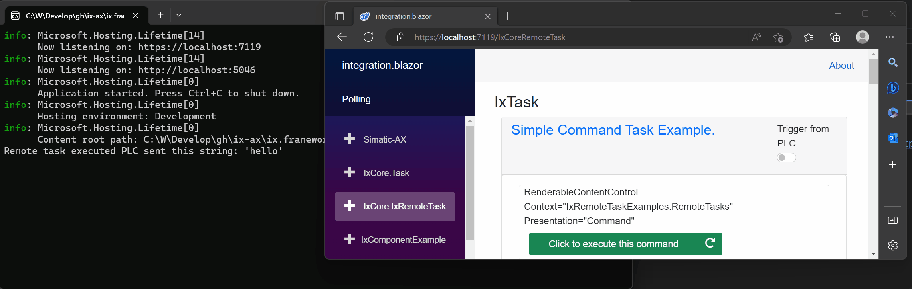

AxoRemoteTask
AxoRemoteTask provides task execution, where the execution of the task is deferred to .NET environment. AxoRemoteTask derives from AxoTask.
AxoRemoteTask needs to be initialized to set the proper AxoContext.
Important
The deferred execution in .NET environment is not hard-real time nor deterministic. You would typically use the AxoRemoteTask when it would be hard to achieve a goal in the PLC, but you can delegate the access to the non-hard-real and nondeterministic environment. Examples of such use would be database access, complex calculations, and email sending.
AxoTask initialization within a AxoContext
_remoteTask.Initialize(THIS); // THIS = IAxoContext
There are two key methods for managing the AxoRemoteTask:
Invoke()fires the execution of the AxoRemoteTask (can be called fire&forget or cyclically)Execute()method must be called cyclically. In contrast toAxoTaskthe method does not execute any logic. You will need to call theExecutemethod cyclically which will deffer the logic execution in .NET environment.
There are the following differences in behavior of DoneWhen and ThrowWhen methods:
DoneWhen(Done_Condition)- Unlike AxoTask Done condition is handled internally. It does not have an effect.ThrowWhen(Error_Condition)- Unlike AxoTask Exception emission is handled internally. It does not have an effect.
For termination of the execution of the AxoRemoteTask there are the following methods:
Abort()- terminates the execution of the AxoRemoteTask and enters theReadystate if the AxoRemoteTask is in theBusystate; otherwise does nothing.
To reset the AxoRemoteTask from any state at any moment, there is the following method:
Restore()acts as a reset of the AxoRemoteTask (sets the state intoReadyfrom any state of the AxoRemoteTask).
The AxoRemoteTask executes upon the Invoke method call. Invoke fires the execution of Execute logic upon the first call, and Invoke does not need cyclical calling.
_remoteTask.Invoke('hello');
Invoke() method returns IAxoTaskState with the following members:
IsBusyindicates the execution started and is running.IsDoneindicates the execution completed with success.HasErrorindicates the execution terminated with a failure.IsAbortedindicates that the execution of the AxoRemoteTask has been aborted. It should continue by calling the methodResume().
Task initialization in .NET
Entry.Plc.AxoRemoteTasks._remoteTask.Initialize(() => Console.WriteLine($"Remote task executed PLC sent this string: '{Entry.Plc.AxoRemoteTasks._remoteTask.Message.GetAsync().Result}'"));
In this example, when the PLC invokes this task it will write a message into console. You can use arbitrary code in place of the labmda expression.

Executing from PLC
Invoking the AxoRemoteTask and waiting for its completion at the same place.
IF(_remoteTask.Invoke('hello').IsDone()) THEN
_doneCounter := _doneCounter + 1;
END_IF;
Invoking the AxoRemoteTask and waiting for its completion at the different places.
// Fire & Forget
_remoteTask.Invoke('hello');
// Wait for done somwhere else
IF(_remoteTask.IsDone()) THEN
_doneCounter := _doneCounter + 1;
END_IF;
Checking if the AxoRemoteTask is executing.
IF(_remoteTask.IsBusy()) THEN
;// Do something after task started
END_IF;
Check for the AxoRemoteTask's error state.
IF(_remoteTask.HasError()) THEN
;// Do something when an exception occurs on remote task.
END_IF;